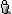

L'information Gedcom tourne d'abord autour des personnes. C'est vous, votre père, vos enfants et n'importe quel ancêtre ou descendant. En cliquant sur le petit symbole  dans le Centre de Contrôle vous pouvez très facilement entrer de nouvelles informations que vous pouvez avoir sur ces personnes.
Lors de la création d'une personne, il est demandé le nom de famille et le sexe. Ensuite vous pouvez spécifier son lien par rapport à vos données actuelles. Choisissez d'abord une famille ou une personne dans l'Arbre Généalogique ou le Tableau des Données. Les boutons radio au-dessous de l'indication de l'entité choisie permettent de définir le nouveau lien. En choisissant une personne, le nouvel individu peut être son frère ou sa soeur, son enfant, son parent (si il n' existe pas déjà) ou son conjoint. En choisissant une famille le nouvel individu peut être un enfant ou un conjoint. Faites votre choix et cliquez sur Créer.
En éditant un Individu dans la Fenêtre d'Édition, vous devrez coller à la norme Gedcom le plus fidèlement possible. Un individu typique présenter les informations suivantes :
@I008@ INDI NAME Nils /Meier/ SEX M BIRT DATE 25 MAY 1970 PLAC Rendsburg, Germany RESI ADDR 202-1241 Kilborn Place DATE FROM 30 JUL 1999 TO 2000
Parcourez les propriétés des personnes composant votre arbre et modifiez les. Quand vous ajoutez de nouvelles propriétés choisissez les dans la liste préétablie ou, si cela s'avère nécessaire et que vous ayez des besoins particuliers, ajoutez de nouvelles étiquettes de propriétés.
Une fonction importante de Gedcom est sa capacité à créer des liens entre les entités. Normalement, les individus ne sont pas isolés - ils sont mariés, ont des parents, des enfants. A chaque fois que vous créez un nouvel Individu, il se trouve lié aux autres par le biais de propriétés. Ces propriétés pour les individus sont FAMC (être un enfant dans une famille) ou FAMS (être un conjoint dans une famille). Ces propriétés se rattachent à la famille par leur id. Vous pouvez explorer les liens entre les personnes et les familles en suivant ces liens. Soyez prudent quand vous supprimez ou créez de nouveaux liens - avoir une vue d'ensemble de l'intégrité référentielle n'est pas facile :).
Prenons par exemple un cas particulier : Dans votre arbre généalogique vous découvrez qu'un ancêtre de la soeur d'une épouse a épousé le frère de celui-ci. Tous ces individus sont déjà dans votre arbre! Vous pouvez créer une nouvelle famille pour ce lien nouvellement découvert. Mais vous ne voulez pas créer un nouvel individu - vous voulez lier des entités existantes! La solution : Choisissez le frère de cet ancêtre et ajoutez-y une propriété FAMS. Changez-le alors pour pointer sur la nouvelle famille en entrant son ID. En cliquant sur le bouton de liaison une propriété HUSB sera automatiquement ajouté à cette famille. La boucle est bouclée.